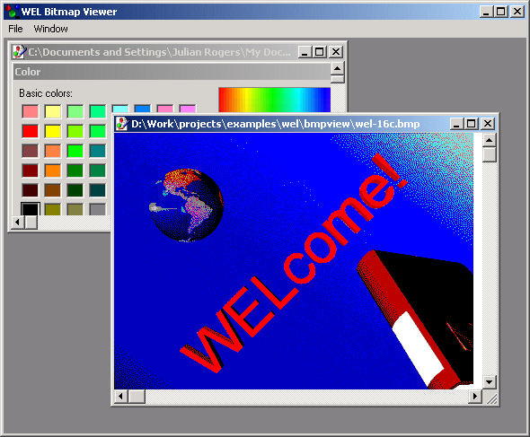

Bitmap View Sample

Compiling
To compile the example:
- Launch EiffelStudio.
- Select Use existing Ace (control file) and click OK.
- Browse to Eiffel50\examples\wel\bmpview\.
- Choose Ace.ace
- Choose the directory where the project will be compiled, by default the same directory containing the Ace
file. If
you select another directory than the default one, please copy icons
(*.ico) and resource files (*.rc) from the
default directory (the one containing the Ace file) to the new
one.
- Click OK.
Running
After launching the program, a window will be displayed as illustrated above, although no child windows will be present. Selecting "Open" from the
"File" menu will allow you to browse for a .BMP file to view. Multiple files may be opened and each opens in a new child window. The options on the "Window" menu
provide features for positioning the child windows. Selecting "Close" will close the currently selected child window, while selecting "Exit" or closing the window manually will
exit the program.
Under the Hood
MAIN_WINDOW inherits WEL_MDI_FRAME_WINDOW and
redefines `on_menu_command' to handle the menu selections. CHILD_WINDOW inherits WEL_MDI_CHILD_WINDOW
and implements make to load a named bitmap, while on_paint has been redefined
to re-draw the bitmap. A WEL_OPEN_FILE_DIALOG is used to select files for viewing.
This sample contains the following classes:
See Also
WEL_OPEN_FILE_DIALOG
Mdi sample